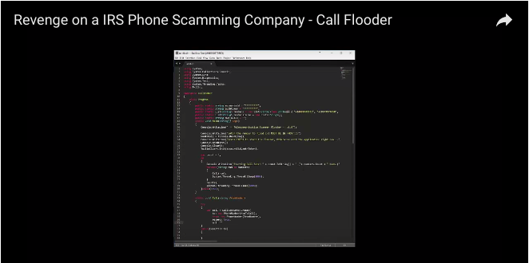

Annoyed by spammers sending you "IRS" phone calls? How about "Problems with your account"?
Well, I am.
There are several approaches to solving this issue.
- Ignore
- Get mad and yell back
- Get duped for the scam
- Report on https://donotcall.gov
- Troll the living daylights out of em
I saw the recent video showing a programmer creating a simple python script to flood the spammers with many calls from different numbers to keep their lines busy.
If you haven't seen the video put on YouTube by "Project Mayham", check it out, it's pretty awesome. Fun starts about 1:55
I took a screenshot of the code the uploader wrote: 
You will notice that it is written in python, and is using a popular telophony service for making the calls.As a programmer I thought, well, lets build our own!
WARNING: READ THE TWILIO TOS. This will go against Twilio's Terms Of Service.
I never tested this on a phone number that I did not own.
I am not responsible for anything you do with this.
Build a anti-spam-spam bot in Node.js
Here is how the bot works:
- A valid Twilio username/apiKey and purchased phone number is required to use a phone number to call from.
- The bot creates a call using a TwiML response from our server to "create" the spoken words (Twilio Programmable Voice).
- And the bot repeats until all the spammer's phone lines are used up.
Step one, head over to https://twilio.com and get the required telophony items. Refer to this guide for more info.
Alright, lets get started by firing up your favorite editor (neovim) and creating two files, one for our bot (client) and one for the server (I'll get to that shortly). Our dependencies are minimal, just the twilio and express modules.package.json
{
"dependencies": {
"express": "^4.15.3",
"twilio": "^3.4.0"
}
}The server.js
We will start with creating the simple server used by twilio for creating the automated voice message. The server returns a TwiML (variation on XML) to the twilio server for converting into the programmable voice.
server.js
var express = require('express')
var app = express()
var PORT = 3000
app.post('/call', function (req, res) {
res.send('<?xml version="1.0" encoding="UTF-8"?><Response><Say>You have been detected for spamming</Say></Response>')
})
console.log('starting on port ', PORT)
app.listen(PORT)Run it with: $ node server.js
You can either host it on a remote server, or use ngrok to host it on your local system.
$ ngrok http 3000
ngrok running...
https://dfdf9034.ngrok.comCopy the URL returned by ngrok for the next step.
The bot.js
Our bot.js will contain the actual code for creating the calls.
Replace the accountId with your twilio account SID, and replace the accountToken with your twilio auth token.
bot.js
var twilio = require('twilio')
var accountId = 'your acount sid here'
var accountToken = 'your account token here'
var client = twilio(accountId, accountToken)
var INTERVAL = 10000 // 10 seconds
var count = 0
var call = function() {
return client.calls.create({
url: 'https://<your ngrok random url>ngrok.com/call',
to: '+<the spammers number>',
from: '+1<the twilio phone number you purchased>'
}, function (err, res) {
if (err) return console.error(err)
count++
console.log('number ', count, 'status: ', res.status)
})
}
call()
setInterval(call, INTERVAL)Save that file and start it with: $ node bot.js
The response should be:
number 1 status: queued
number 2 status: queued
number 3 status: queued
...Each queued call is then passed to the target which receives the message: "You have been detected for spamming"
Adding support for multiple numbers is easy, just do a loop over them.
Congrats!
The complete source code can be found here